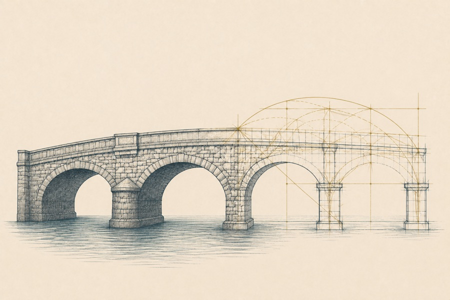
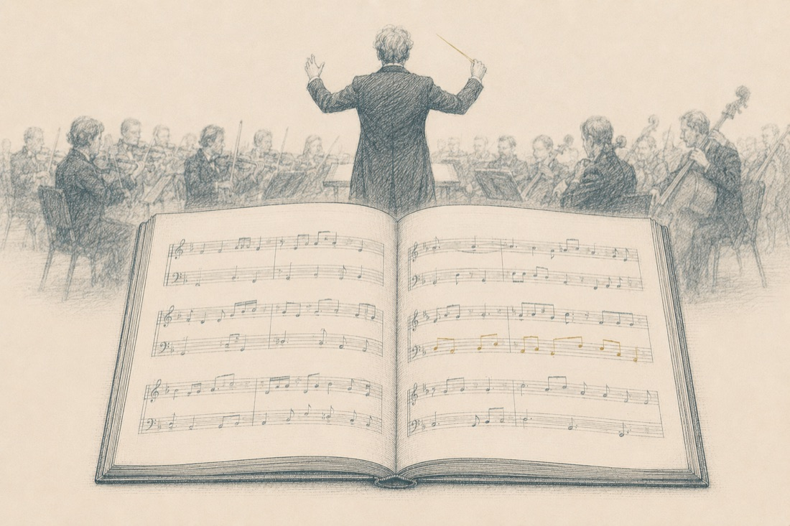
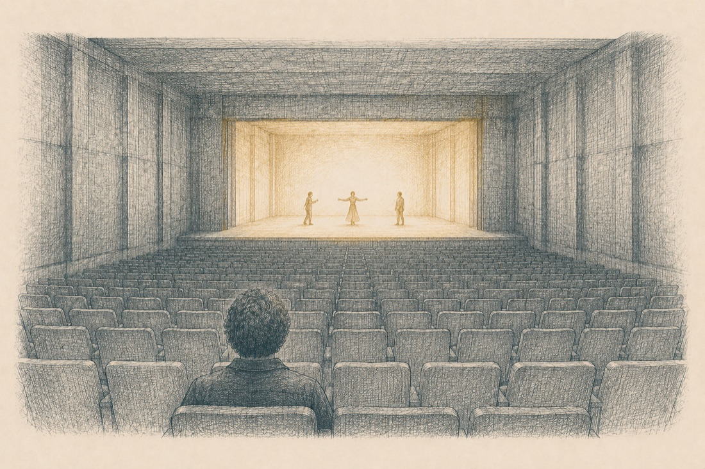

Как ты догадываешься, мы не можем сдвинуться с места, не договорившись о понятиях. То есть, прежде всего, мы должны ответить себе на вопрос, что означает слово «методология» вообще и «методология обучения» в частности.
Определение
Методология — это учение о способах, методах, стратегиях и принципах организации той или иной человеческой деятельности, как теоретической, так и практической.
Окей, переведём это определение на более человеческий, понятный язык: методология (в нашем случае — методология обучения взрослых людей) — это система принципов и технологий, позволяющих сделать процесс обучения каким? — правильно! — управляемым и предсказуемым.
(я же предупредил, что буду регулярно повторять два этих слова на протяжении всей книги? Вот: не соврал).
Ещё одно слово, без которого нам не обойтись, говоря о методологии обучения — это слово «структура». Почему? Потому что когда мы говорим о способах организации чего бы то ни было, мы говорим о том, как структурно устроена та или иная деятельность. В нашем с тобой случае — как структурно устроена деятельность по передаче знаний другим людям, по превращению, скажем, книги, которую мы сняли с полки, — в образовательный процесс.
Давай коротко разберёмся с тем, что такое «структура» на нескольких наглядных примерах (по опыту, навык отличать структуру от содержания в начале пути может даваться с некоторым трудом и требовать специальной фокусировки внимания).
Пример из архитектуры

Вот, скажем, течёт река, а через реку возведён мост. Мы, обыватели, смотрим на него просто как на некую монолитную постройку. При этом любой грамотный инженер, любой архитектор, глядя на мост, будет видеть огромное количество математически точных закономерностей, принципов и решений, благодаря которым автомобилисты могут безопасно ездить с одного берега реки на другой не один-два дня, а годы, десятилетия, может быть, даже века.
Другими словами, внутренняя конструкция моста, его опоры, система крепежей, подбор материалов и т.д. — это и есть та структура, которую обязан знать, понимать и учитывать профессионал.
Пример из музыки

Когда ты слушаешь фугу И. С. Баха, ты слышишь непрерывный поток звуков и тебе может даже не приходить в голову, насколько он упорядочен, насколько дотошно и расчётливо организован. Кому-то может даже показаться, что музыка — плод бессознательного, спонтанного вдохновения, из серии «вот как-то само из космоса пришло»... При этом любой профессионал, услышав баховскую музыку, немедленно заметит внутреннюю структуру — строгие, математически выверенные законы полифонии и гармонии, которые композитор использовал для того, чтобы даже спустя столетия его произведения продолжали управляемо и предсказуемо воздействовать на состояние слушателей.
К чему я приводил эти примеры: фактически вся эта книга посвящена структуре обучающего процесса. Его содержание — твоя сфера компетентности, в которую я не буду заглядывать: это может быть психология, иностранные языки, бухгалтерское дело, продажи или пошив пуховых платков — не имеет значения. Моя задача — передать тебе навык видеть, каким структурным законам подчинить твою экспертность, чтобы она превратилась в эффективный образовательный продукт, который будет приводить к прогнозируемо высокому результату.
Понятно ли с идеей структуры и её отличием от содержания? Ок, чтоб моя совесть была окончательно спокойна, приведу финальный пример, который (надеюсь) сделает всё предельно ясным:
Структура
рельсы, шпалы, колёса, двигатель, руль, каркас.
Содержание
то, как ты назовёшь свой локомотив, кого в него посадишь и куда повезёшь.
Зафиксируем
Методология обучения — это не разрозненные «фишки», типа «как нарезать слайды» или «в каком порядке расставить уроки». Это целостная система принципов и методов, или, если хочешь — операционная система, которая позволяет делать процесс обучения взрослых людей управляемым и предсказуемым.
02Сфера компетенции
Сфера компетенции методолога
✦
Теперь давай разберёмся, кто такой методолог, в чём заключается его функционал, какие задачи он должен решать, какими навыками обладать, что входит в сферу его компетенции. Итак, методолог должен уметь практически отвечать на вопросы:
Кого и чему мы учим, в чём цель обучения и к какому результату мы можем ученика привести?
Как мы построим процесс обучения, чтобы результат действительно был достигнут? Какие форматы работы предложим, чтобы именно эти люди получили именно тот результат, что был заявлен?
По какой системе мы будем оценивать промежуточные результаты? Благодаря чему мы сможем убедиться, что прогресс в обучении действительно есть?
Каков будет темп движения, с какой частотой и как мы будем встречаться, будем ли встречаться вообще (и прочие технические моменты)?
Как именно будут выстраиваться взаимоотношения между преподавателем и студентами. Как будет организована коммуникация между учениками?
Как будет меняться состояние студентов и более того (!) насколько они будут получать удовольствие от обучения. Да-да: сделать так, чтобы учёба приносила людям радость — это работа методолога! И мы обязательно поговорим о том, как именно это устроить.
И, конечно, очень важный вопрос, — больной для огромного количества онлайн-школ и отдельных экспертов, который мы выделим отдельным пунктом. Как методологу управлять мотивацией студентов? Что делать, когда она падает, когда люди начинают по каким-то причинам «отваливаться», терять интерес, пропускать вебинары, «уходить с радаров»? Как мы будем себя вести в ситуациях, когда, по определённым законам социальной динамики (и это будет очень важная часть нашего разговора) — между участниками курса или программы начнёт накапливаться напряжение, будет повышаться уровень конфликтности?
Раздел 2
Методолог, продакт-менеджер, маркетолог: проведём границы
✦ ✦ ✦
01Три специализации
На этом в целом можно было бы и закончить. Но в онлайн-образовании есть ещё как минимум две специализации, которые находятся совсем рядом с методологией — и нам нужно чётко определить границы, где заканчивается одно и начинается другое.
Специализация 1
Продакт-менеджмент
Продакт-менеджер, он же продуктолог (как тебе привычнее) пришёл в онлайн-образование из IT. Это специалист, который смотрит на образование как на продукт и отвечает на очень важные вопросы: как этот продукт будет развиваться во времени и пространстве, как будет упакован, какие варианты предлагать — и насколько прибыльным, насколько выгодным этот образовательный продукт для нас является. Для продуктолога обучение — это продукт, и он отвечает за то, чтобы это была конфетка и чтобы она была хорошо завёрнута.
Специализация 2
Маркетинг
Очень важная специализация. Маркетолог в обучающем продукте отвечает за то, чтобы выяснить, кто наши люди, кто наша целевая аудитория, каким месседжем мы их зацепим и как сделаем так, чтобы они пришли к нам учиться.
МетодологОтвечает за то, чтобы образовательный процесс был результативным (управляемым и предсказуемым, помним, да? ;)
ПродуктологОтвечает за то, чтобы образовательный продукт жил во времени, развивался и приносил прибыль.
МаркетологОтвечает за то, чтобы у нас были люди, которых мы можем учить.
И да, я не раз встречал, как эти трое — продуктолог, маркетолог и методолог — на дух не переносят друг друга, когда работают вместе на одном проекте. Потому что они где-то трутся друг об друга боками, где-то заходят на территории друг друга. Но важно помнить: все трое работают на одно целое и, по сути, на одну общую цель — чтобы онлайн-курс, онлайн-программа, онлайн-школа, образовательный проект существовал, развивался, рос и приносил пользу.
Что здесь ещё важно отметить? Да, это близкие друг другу специальности, но очень важно, чтобы мы их с вами не путали.
02Практика
Рабочая тетрадь
Проведите границы трёх ролей
1. Зафиксируйте прямо сейчас — не откладывая на потом — своими словами, как вы услышали и как понимаете, где пролегает граница между маркетологом, методологом и продуктологом.
2. Опишите вашу зону компетенций как методолога — если вы уже работаете на проекте или планируете когда-нибудь работать в таком качестве.
3. Проверьте себя: прочитайте написанное вслух. Если бы вы объясняли эти границы коллеге — понял бы он с первого раза, кто за что отвечает?
Заполнять в тетради книгиоткроется в соседней вкладке; ответы сохраняются, тетрадь можно скачать в PDF или распечатать
вопросы вместе с ответами скопируются — вставить можно в заметки или свой файл
А дальше нас ждёт ещё один очень важный нюанс — очень тонкий, очень глубокий. Не переключайтесь.
Раздел 3
Метапозиция методолога
✦ ✦ ✦
01Взгляд «над» ситуацией
Знаешь, я решил обсудить эту тему в самом начале книги о методологии, когда обнаружил, что мы с моими коллегами порой не слишком хорошо друг друга понимаем — просто потому, что по-разному думаем о процессе обучения. Зачастую коллеги сильно зацикливаются на отдельных мелких решениях и теряют взгляд на систему целиком.
Мы уже сказали, что методология обучающего процесса — это целостная операционная система мышления. Так вот, внутри этой операционной системы есть очень важный мыслительный инструмент, который так и называется — метапозиция.
Определение
Метапозиция — это взгляд «над» ситуацией. Метафорически выражаясь, это взгляд архитектора сверху, как на чертёж, так и на построенное здание. Метапозиция в нашей сфере позволяет видеть образовательный курс, тренинг или мастер-класс, как целостную систему, где все элементы взаимосвязаны и влияют друг на друга. Благодаря метапозиции мы можем задаваться, например, такими вопросами: что поменяется, если мы переставим вот здесь уроки местами? Как это в долгосрочном режиме повлияет на опыт студентов? Как те или иные наши действия отразятся на результатах обучения — промежуточных и финальных?
И чтобы было чуть более понятно, приведу ещё пару примеров метапозиции из других областей.
Пример из театра

Театральный режиссёр сидит в заднем ряду зрительного зала и смотрит, как репетируют артисты. Порой он может эмоционально включаться в содержание происходящего на сцене, чтобы сопоставить свои переживания с опытом потенциального зрителя. Но затем ему очень важно вернуться в позицию отстранённого, но очень внимательного наблюдателя, который не захвачен событийным рядом — и благодаря этому может видеть спектакль, как целостную систему. Благодаря такому взгляду, режиссёр понимает, каким образом переставить местами сцены, как уплотнить темпоритм, какие световые или музыкальные решения применить, чтобы добиться более мощного воздействия на зрителя.
Пример из кино
Когда ты смотришь большое кино, то скорее всего, не обращаешь внимания на монтажные склейки. И не обращаешь именно потому, что в своё время монтажёр Уолтер Мёрч разработал правило из шести критериев, ставшее потом в Голливуде золотым стандартом. Эти шесть правил направлены ровно на то, чтобы ты не замечал склеек, а был полностью погружён в развитие истории и персонажей.
Метапозиция — это именно тот мыслительный инструмент, который позволяет режиссёрам, операторам, архитекторам, любым другим деятелям науки, искусства и бизнеса добиваться максимального успеха в своих проектах: они умеют смотреть на своё детище со стороны и сверху, постоянно задавая себе вопросы о том, как повлияют их действия на систему целиком и на «клиентский опыт».
Ключевая мысль
Наша задача как методологов — научиться, глядя на систему сверху, выстраивать процесс обучения так, чтобы студенты не замечали швов, получали удовольствие от процесса и непременно получали те результаты, за которыми пришли.
Теперь давай попробуем нащупать эту метапозицию внутри себя. Для этого мы просто зададимся несколькими самыми базовыми вопросами и проверим, насколько нам вообще свойственны такие интеллектуальные упражнения. Мы обязательно будем углубляться и тренировать этот навык дальше — всё наше движение по книге подчинено тому, чтобы к её финалу метапозиция была хорошенько встроена в твою внутреннюю лабораторию.
02Практика
Рабочая тетрадь
Нащупай свою метапозицию
Задача этой практики — отрефлексировать, насколько для тебя вообще характерно выходить в метапозицию при создании своего продукта? Если ты ещё только собираешься сконструировать свой первый обучающий курс — тогда вопросы ниже пригодятся тебе для верной настройки.
1. Принимая решения в рамках собственного проекта, я думаю чаще и больше о мелких деталях — или же о том, на каких принципах оно устроено, каким правилам и подходам подчинено?
2. Задумываюсь ли я о том, как мои действия влияют на процесс ученика — помогают они ему или мешают?
3. Насколько мне привычно (или нет?) подвергать отстранённому, эмоционально нейтральному анализу свои идеи по проекту?
4. О чём я думаю чаще — о содержании курса, о контенте, которым хочу поделиться? Или же о том, как именно этот контент организовать, чтобы сделать обучение более эффективным?
Заполнять в тетради книгиоткроется в соседней вкладке; ответы сохраняются, тетрадь можно скачать в PDF или распечатать
вопросы вместе с ответами скопируются — вставить можно в заметки или свой файл
Раздел 4
Чем обучение взрослых отличается от обучения детей
✦ ✦ ✦
01Взрослые и дети
Наконец, в рамках первого раздела нам крайне важно разобраться ещё с одним вопросом — собственно, ты его уже прочитал в заголовке.
Почему этот вопрос имеет для нас большое значение? Дело в том, что огромное количество экспертов, выпускающих образовательные продукты, вообще не подозревают, что взрослые учатся несколько иначе, нежели дети. И более того: привычные им методики, знакомые по учёбе в школах и вузах 30-40-летней давности, демонстрируют откровенную неэффективность, когда речь идёт о работе с современными взрослыми1.
Так в чём же различия? Наведём резкость: когда мы совсем маленькие, сам процесс исследования окружающего мира часто доставляет нам огромное удовольствие. Мир ещё не успел стать привычным: почти за каждым углом обнаруживается что-то, чего мы раньше не знали. И когда любимые мама, папа или первая учительница говорят: «Давай я расскажу тебе что-нибудь классное про то, как устроена наша планета», — ребёнок чаще всего с восторгом в это включается. Новизна привлекает внимание, вызывает любопытство и задействует системы мозга, связанные с мотивацией и обучением.
Что происходит с возрастом? Мы накапливаем жизненный опыт, а вместе с ним — собственные представления о мире, критерии качества и личную позицию относительно того, на что мы готовы (или нет) тратить время и внимание. Именно поэтому взрослый человек уже редко включается в обучение только потому, что ему пообещали рассказать что-нибудь интересное. Он начинает проверять эксперта на зуб: насколько тот компетентен, понимает ли реальные задачи аудитории, можно ли доверять его словам и пригодится ли полученная информация в жизни.
Чтобы взрослый человек по-настоящему погрузился в обучение, одной новизны мало. Ему нужны смысл, практическая ценность, уважение к его опыту и основания доверять тому, кто собирается его учить.
Итак, вот она точка, где мы готовы чётко зафиксировать принципы обучения взрослых людей, которые лягут в основу твоего будущего обучающего продукта. Их впервые сформулировал Малкольм Ноулз, основоположник андрагогики2.
Первый принцип: взрослому важно понимать, зачем ему учиться. До начала обучения человеку важно получить ответы на три вопроса: что именно я буду осваивать, в чём ценности этих знаний/навыков и как это поможет мне в жизни.
Второй принцип: взрослый воспринимает себя как самостоятельного и независимого человека, и поэтому хочет влиять на собственное обучение: участвовать в выборе задач, принимать решения, оценивать свой прогресс.
Третий принцип: взрослый приходит учиться с уже накопленным опытом, и наличие этого опыта, как говорится — не баг, а фича. Он становится материалом для обучения: на него можно опираться, его можно анализировать, сравнивать с новыми подходами и переосмысливать. Иногда он помогает. Иногда тормозит и ограничивает. Но в любом случае, личный опыт взрослого студента — важный элемент процесса обучения, который нельзя игнорировать. С ним нужно работать.
Четвёртый принцип: готовность взрослого учиться возникает в ответ на жизненную ситуацию. Человек особенно восприимчив к обучению тогда, когда новые знания нужны ему здесь и сейчас: для новой должности, разрешения конфликта, запуска проекта, смены профессии или очередного публичного выступления, которое уже маячит в календаре.
Пятый принцип: взрослые в процессе обучения ориентированы на решение задач, а не на изучение предмета как такового. Человек приходит не за тем, чтобы «изучить риторику вообще». Он хочет уверенно провести напряжённые переговоры, защитить проект, убедительно выступить, продать совету директоров программу трансформации компании. И он будет ожидать, чтобы обучающая программа привела его именно к тому конкретному и прикладному результату, за которым он пришёл. Мы, как авторы курсов и методологи, обязаны это учитывать.
Шестой принцип: собственная внутренняя мотивация в обучении работает для взрослого сильнее, чем внешняя. Внешние стимулы — диплом, повышение, деньги, одобрение руководителя — могут работать. Но гораздо усерднее и плодотворнее человек учится, когда видит в обучении личную ценность. Хитрый нюанс здесь в том, что эту самую ценность он НЕ всегда способен осознать на старте программы или курса (особенно, если учиться он пришёл не совсем по своей воле — в корпоративной среде такое часто бывает!), и наша работа — помочь студенту в этом. Но я снова забегаю вперёд…
1 Я говорю про «современных взрослых» не просто так. При построении образовательного процесса мы обязаны учитывать эпоху, в которую живём: победное шествие соцсетей и популярность формата коротких видео очень серьёзно повлияли на нашу способность сосредотачиваться и удерживать внимание во время учёбы. Это не повод заламывать руки и вопить «о, времена, о, нравы» — это повод серьёзно задуматься о том, как нам удержать внимание наших студентов. Более подробно об этом поговорим в следующих главах.
2 Андрагогика — наука об обучении взрослых.
02Шесть принципов на практике
Итак, мы перечислили и коротко описали все шесть принципов. Теперь разберём их на одном и том же практическом материале. Представь, что мы вместе проектируем курс под названием «Самопрезентация за 60 секунд». Сейчас будем по очереди прикладывать программе каждый из шести принципов и смотреть, что происходит, когда мы его соблюдаем, а что — когда бодро проезжаем мимо.
Сначала разберём, как будет выглядеть курс, где проигнорировали этот принцип: вот участники собрались на первое занятие, мы выходим к группе и заводим песнь издалека: «Самопрезентация уходит корнями в античную риторику. Ещё Аристотель выделял три способа убеждения…»
И вот на двадцатой минуте мы плавно переходим от Аристотеля к Цицерону, а участники всё ещё пытаются понять, что получат именно они на этом курсе, какие собственные проблемы решат, какое отношение эти уважаемые древнеримские граждане имеют к их актуальным задачам (скажем, продать собственные услуги потенциальным клиентам на международной выставке…) И вот более терпеливые с тоской поглядывают на часы, а особо требовательные уже порядочно озверели. До появления первых признаков «сложного» поведения в группе осталось 3…, 2…, 1…
Но стоп, стоп. Про «сложное поведение» у нас разговор ещё впереди, а пока зафиксируем: игнорирование первого принципа довольно впечатляющим образом ломает нам эффективность обучения. Что же можно здесь починить?
Итак, теперь учтём первый принцип андрагогики в конструкции курса. И тогда: в самом начале встречи мы обозначим результат: «За время курса вы подготовите и несколько раз отрепетируете самопрезентацию продолжительностью до 60 секунд. Её можно будет использовать на профессиональном мероприятии, собеседовании, встрече с потенциальным клиентом или при защите проекта».
Затем предложим участникам определить собственную точку применения: «Где именно вам может пригодиться навык коротко и убедительно рассказать о себе в ближайший месяц?» Так наша группа сразу поймёт, чем они будут заниматься, зачем и где смогут использовать результат: у обучения появился адрес. Оно теперь непосредственным образом связано с реальной жизнью наших студентов.
Принцип 2
Взрослый хочет участвовать в собственном обучении
Как не надо
Мы выдаём всем одинаковое задание: «Представьте, что вы оказались на международной конференции производителей сельскохозяйственной техники. Подготовьте самопрезентацию». Среди участников — психолог, руководитель отдела продаж, фотограф и основательница школы танцев. Продажей тракторов никто из них пока не интересовался, но методичка велит — люди терпеливо готовят.
После выступления только мы, тренеры, выносим вердикт: здесь хорошо, здесь переделать. Самих участников к оценке своих и чужих выступлений мы не приглашаем, и довольно быстро начинаем наблюдать, как падает уровень активности в группе и как часть студентов переключаются в знакомую для себя позицию пассивных школьников — «вы скажите, как правильно, а потом оценку поставьте», а другая часть начинает разными способами саботировать процесс…
Как надо
Каждый участник сам выбирает ситуацию, аудиторию и задачу своей самопрезентации. Один готовится к собеседованию. Второй — к встрече с инвестором. Третий — к встрече с клиентом на шумной выставке.
До начала работы каждый участник формулирует:
перед кем он будет выступать;
какого результата хочет добиться;
что слушатель должен понять и запомнить;
по каким признакам он сам определит, что самопрезентация удалась.
После выступления студент сам комментирует свой опыт и оценивает себя сам. Затем получает обратную связь от группы и тренера. Потом решает, что именно хочет изменить во второй попытке. Короче говоря, мы делаем всё для того, чтобы студенты оставались проактивными соучастниками собственного обучения, а не объектами педагогического воздействия.
И да, при таком раскладе интереса, вовлечённости, драйва от обучения существенно больше. Когда задание напрямую касается твоих актуальных жизненных задач, и ты сам выбрал с ними разбираться, прикидываться мебелью становится незачем.
Принцип 3
Опыт взрослого становится материалом обучения
Как не надо
Мы обращаемся с участниками так, словно до начала курса они никогда в жизни не рассказывали о себе: выдаём один максимально абстрактный шаблон на всех:
Назовите имя.
Назовите профессию.
Перечислите три достижения.
Завершите призывом к действию.
Прошлое студентов, их профессии, удачные выступления, провалы, личные цели и задачи, привычные формулировки и особенности общения нас почти не интересуют. К концу обучения участники состряпают несколько одинаковых речей и станут более всего напоминать говорящих кукол, сходящих с конвейера.
Как надо
Сначала мы предлагаем вспомнить реальный опыт: «Когда вам в последний раз приходилось что-то о себе рассказывать? Где и как это было? Что вы сказали? Как себя чувствовали? Как отреагировал собеседник?» И т.д. Можно попросить участника произнести свою обычную самопрезентацию — такую, какой она была до прихода на курс.
Затем разобрать её:
какие сильные моменты в ней уже есть;
какие привычки мешают;
что человек обычно упускает;
какие реакции аудитории повторяются;
какие убеждения/представления о себе и слушателях стоят за его словами.
То есть: мы не выбрасываем прежний опыт на помойку; мы используем его как исходный материал, из которого можно вылепить более успешную, более совершенную версию. И тогда кто-то из студентов может обнаружить, что уже многое умеет, но никогда не осознавал и не замечал этого. А для кого-то станет откровением, что именно специфическая монотонная интонация предыдущие 10 лет приводила к тому, что глаза собеседников стекленели спустя первые 20 секунд его речи.
В любом случае мы присоединяем обучение к субъективной реальности наших участников, подсаживаем дерево новых навыков на почву предыдущего жизненного опыта.
Принцип 4
Готовность учиться связана с актуальной жизненной задачей
Как не надо
Мы говорим: «Навык самопрезентации нужен всем и каждому. Он обязательно пригодится вам когда-нибудь. Возможно, однажды вы окажетесь на важном мероприятии и встретите интересного человека…» После слов «когда-нибудь», «возможно», «однажды» взрослый мозг аккуратно складывает информацию в дальний ящик, рядом с инструкцией от сломанного телевизора и планами когда-нибудь выучить японский.
Как надо
Мы выясняем, кому и для чего этот навык требуется сейчас: «У кого в ближайшие недели будет собеседование? Кто готовится к конференции? Кому предстоит защита проекта? Кто регулярно знакомится с потенциальными клиентами? Кому трудно коротко объяснить, чем он полезен? Возможно, есть какие-то ещё обстоятельства, о которых мы не упомянули?»
Участник берёт в работу ситуацию, которая уже существует в его жизни. Если через десять дней он идёт на отраслевую конференцию, мы готовим речь для этой конференции. Если он ищет работу, создаём вариант для собеседования. Если представляет проект совету директоров — работаем с этой аудиторией и этим материалом.
Обучение попадает в момент, когда человек действительно готов им воспользоваться. И вероятность переноса в жизнь резко повышается.
Принцип 5
Взрослый ориентирован на решение конкретной задачи
Как не надо
Мы решаем дать участникам фундаментальное образование по риторике. Рассказываем про виды речей, законы композиции, античных ораторов, Цицерона, Черчилля, Кеннеди и двенадцать способов начать выступление. Всё это может быть интересно. Некоторые участники обязательно сфотографируют слайды. Но через два часа человек по-прежнему не способен за минуту объяснить, кто он, чем занимается и почему с ним стоит продолжить разговор. Знаний стало больше. Задача осталась на месте. Почему? Потому что навык так и не сформирован.
Как надо
Мы жёстко удерживаем границы курса: «На выходе участник должен уметь представить себя за 60 секунд в конкретной ситуации и перед конкретной аудиторией». И тогда вся излагаемая на курсе теория подчинена решению этой задачи: нужен принцип отбора информации? Отлично, мы дадим принцип отбора. Есть запрос на структуру? Даём структуру. Нужно научиться сокращать — будем тренировать лаконичность. И сразу пробовать, сразу применять.
Что здесь я хочу особо подчеркнуть: если мы строим обучение вокруг решения реальной задачи, это естественным образом заставляет нас делать программу практико- и навыкоориентированной: то есть сразу же, ещё на берегу думать о том, чему конкретно научится наш выпускник по итогам курса3.
Принцип 6
Взрослому нужна собственная мотивация
Как не надо
Мы строим курс вокруг внешнего давления: «Выполните все задания — получите сертификат». «Не сдадите домашнюю работу — не получите доступ к следующему модулю». «Лучший участник получит приз». Это действительно рабочий механизм, потому что люди на многое готовы ради красивой корочки и желания не чувствовать себя хуже других. Но если за обучением нет личного смысла, человек будет учиться формально, выполнять только минимум, необходимый для прохождения курса. И уж конечно любое чуть более актуальное жизненное обстоятельство (болезнь ребёнка, переезд, перемены в личной жизни) немедленно «выдернут» его из обучающего процесса, отправляя вашу программу в печальный список купленных и брошенных на середине4.
Как надо
В начале курса мы поможем участнику выяснить: «Что изменится в вашей жизни, если вы научитесь уверенно и чётко презентовать себя за минуту? На что повлияет приобретение этого навыка? Что станет возможным? В каких ситуациях вы будете чувствовать себя свободнее? Какую цену вы сейчас платите за то, что не умеете коротко и точно говорить о себе?»
Для одного мотивацией станет профессиональный рост внутри компании. Для другого — возможность привлекать более статусных и платёжеспособных клиентов. Для третьего — перспектива расширения своей узнаваемости, усиление личного бренда. Для четвёртого — радость от приобретения контактов с новыми интересными людьми.
По ходу же курса участник будет наблюдать собственный прогресс, сравнивая первую и вторую видеозаписи своей презентации, замечая, как меняются структура, речь, состояние и реакция слушателей; а мы, как ведущие, будем помогать ему связывать свои успехи с важными для него перспективами, добиваясь того, чтоб в голове студента всякий раз загоралась зелёная лампочка: «Я осваиваю важный для себя навык. Я уже вижу изменения. И я понимаю, для чего продолжаю вкладывать своё время и силы в это обучение»5.
Соберём всё вместе
Итак, если мы проектируем курс «Самопрезентация за 60 секунд» с учётом шести принципов андрагогики, то:
Участник понимает, зачем ему нужен этот навык и какой результат он получит.
Сам выбирает ситуацию, аудиторию и задачу.
Использует собственный опыт как исходный материал.
Работает с актуальной жизненной ситуацией.
Решает конкретную задачу и практикуется прямо во время обучения.
Связывает обучение с личной мотивацией и видит собственный прогресс.
В результате перед нами уже не лекция о самопрезентации. Перед нами процесс, внутри которого человек создаёт рабочий инструмент для своей жизни, испытывает его, получает обратную связь и доводит до результата.
Разница примерно такая же, как между рассказом о плавании и моментом, когда человек наконец оказывается в воде. Желательно всё-таки не в самой глубокой части бассейна.
3 Как формировать навык — это отдельный и очень важный разговор, который ждёт нас в будущих главах этой книги.
4 Почему большинство курсов оказываются брошенными именно на середине — поговорим в главе, посвящённой групповой динамике.
5 Как именно создавать эту связь в голове наших студентов — обязательно обсудим, когда дойдём до модели под названием «матрёшка».
03Практика
Рабочая тетрадь
Примените шесть принципов андрагогики
1. Выберите образовательный продукт. Если у вас уже есть собственный курс, тренинг или программа — возьмите его. Если продукта пока нет, продолжите работать с курсом «Самопрезентация за 60 секунд». Можно выбрать другую тему, например «Правила эффективной переписки».
2. Потребность знать. Ответьте на вопросы: Почему участнику важно освоить это? Какую проблему он решит? Как вы объясните ему пользу обучения в самом начале? Какой результат он получит на выходе?
3. Самостоятельность участника. Подумайте: На что участник сможет влиять? Что он выберет самостоятельно? Где будет оценивать собственный прогресс? Какие решения он сможет принимать по ходу обучения?
4. Предыдущий опыт. Запишите: Какой опыт участники уже приносят с собой? Как вы сможете его обнаружить? Где он станет материалом для анализа или практики? Какие привычные представления могут помогать, а какие — мешать обучению?
5. Готовность учиться. Определите: С какой актуальной жизненной или профессиональной задачей связано обучение? В какой момент человеку особенно нужен этот продукт? Как участник сможет работать со своей реальной ситуацией, а не с отвлечённым учебным примером?
6. Ориентация на решение задачи. Ответьте: Какую конкретную задачу решает программа? Что участник сможет сделать после обучения? Где он попробует это во время занятия? Что можно убрать из содержания, потому что оно интересно, но не помогает решить основную задачу?
7. Мотивация. Подумайте: Ради чего участник готов учиться? Какую личную ценность имеет для него результат? Как он увидит собственный прогресс? Что поможет ему продолжать работу после первого всплеска энтузиазма?
8. Самопроверка. Перечитайте свои ответы и задайте себе шесть вопросов: понимает ли участник, зачем ему учиться? Может ли он влиять на процесс и оценивать себя? Используется ли его предыдущий опыт? Связано ли обучение с актуальной жизненной задачей? Решает ли участник конкретную проблему и практикуется ли во время обучения? Есть ли у него личная причина довести обучение до результата? Отметьте, какие принципы уже встроены в ваш продукт, а какие пока существуют в виде доброго намерения.
Заполнять в тетради книгиоткроется в соседней вкладке; ответы сохраняются, тетрадь можно скачать в PDF или распечатать
вопросы вместе с ответами скопируются — вставить можно в заметки или свой файл
Ну вот, друзья, мы проделали неслабую работу за этот пролог. Разобрались, что такое методология и кто такой методолог. Освоили метапозицию. Выяснили, чем проектирование обучения для взрослых отличается от простой передачи информации. И сразу примерили шесть принципов андрагогики к собственному продукту. Этих вбитых колышков вполне достаточно, чтобы заходить на глубину. Со следующей главы мы начнём вдумчиво, последовательно и прикладно разбирать создание образовательной программы с самого начала — с первых решений, которые принимает её автор. До встречи в следующей главе.
04Практика
Рабочая тетрадь
Примените принципы андрагогики
1. Если у вас есть свой собственный продукт, свой курс — прямо напишите четыре строчки, быстро, в течение 40–50 секунд: какие идеи прямо сейчас приходят в голову, как применить в нём принципы обучения взрослых.
2. Если собственного продукта нет — продолжите фантазировать на тему курса «Самопрезентация за 60 секунд». А если тема самопрезентации вам не близка, возьмите тему «Правила эффективной переписки».
3. Набросайте по выбранной теме четыре идеи: по одной на каждый базовый принцип андрагогики.
4. Самопроверка: перечитайте каждую идею и спросите себя — участвует ли здесь ученик в планировании и оценке, практикует ли здесь и сейчас, связано ли это с его реальной жизнью, решает ли конкретную задачу?
Заполнять в тетради книгиоткроется в соседней вкладке; ответы сохраняются, тетрадь можно скачать в PDF или распечатать
вопросы вместе с ответами скопируются — вставить можно в заметки или свой файл
Ну вот, друзья, мы проделали неслабую работу в этой главе. Мы разобрались, что такое методология, кто такой методолог, что такое метапозиция, и выяснили, чем обучение взрослых отличается от обучения детей. Этих основ нам вполне достаточно, чтобы погружаться вглубь. В следующей главе мы начнём вдумчиво и последовательно собирать каркас твоей авторской обучающей программы: скорее переворачивай страницу!